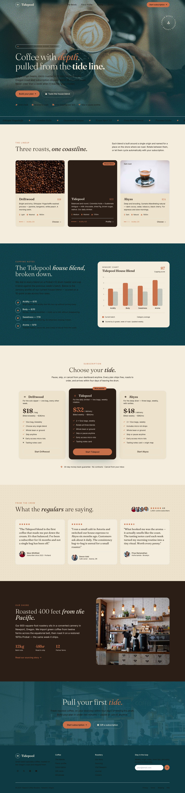
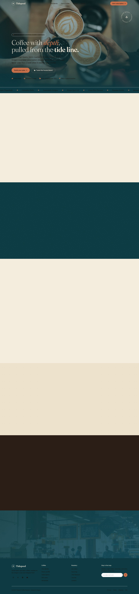

▶ Open the generated page (live) View the harness (≈200 lines)
The idea
The Design Arena teardown found something counterintuitive: GLM-5.2 — a 744B, text-only, MIT-licensed model with no vision at all — tops a visual web-design benchmark, beating far pricier frontier models. If a blind model is the best designer, then the generator half of “make a good web page” is solved and cheap. What it can’t do is see its own output: whether the flexbox collapsed, the image 404’d, or the chart actually drew.
So split the job across two senses:
- A text-only coder writes the HTML/CSS/JS. (Cheap, fast, state-of-the-art.)
- A vision critic looks at a screenshot of the rendered page and grades it against a checklist.
- Each failed check becomes a concrete fix fed back to the coder. Loop until it passes.
Everything here runs on open weights — an all-GLM stack (GLM-5.2 + GLM-4.6V) keeps the whole loop open and permissively licensed.
The result
With the coder, the critic, and the capture between them all correct, the loop converged on the first round with a clean sweep from the critic. The page below is exactly what GLM-5.2 produced — hero, a three-tier pricing table, a testimonials row, real CDN imagery, and a working Chart.js bar chart for the blend’s flavor profile:

5,5,5,5,5,5,5 — pass.The twist: the model was fine — the harness lied
For three runs the loop looked stuck: the critic kept reporting the pricing, testimonials, and chart
as “not visible on the page.” But inspecting the HTML showed those sections were there the whole
time — GLM-5.2 had built scroll-reveal sections (opacity:0 + IntersectionObserver,
the “animated, elaborate” style the benchmark describes). The full-page screenshot never scrolled,
so it captured those sections at opacity:0 — blank. The critic was honestly reporting blank
pixels. The critic was right; the screenshot was the bug.
Here is the exact same final page, screenshotted two ways:

opacity:0 → the critic reports them “missing.”opacity:1, nudge a resize so Chart.js redraws. Now the critic sees what was built.No amount of prompting or patching the model fixes a false negative caused by the capture. A text-coder + vision-QA loop has three components that must be correct, not two: the coder, the critic, and the render/capture between them.
How it got there — five runs
| Run | Config | Outcome | What it taught |
|---|---|---|---|
| 1 | OpenRouter free · GLM-5.2 (6.5K tok) + Qwen3-VL-235B · regenerate | 3 rounds, no pass | The critic correctly caught an unrendered Chart.js canvas and broken images → the vision-QA half works. log |
| 2 | TokenRouter · GLM-5.2 + GLM-4.6V (16K) · regenerate-from-scratch | 3 rounds, no pass | Budget helped but sections thrashed in and out; round 1 blanked (reasoning ate the token budget). Budget is necessary, not sufficient. log |
| 3 | + patch-mode (feed prior HTML back), 28K tok | 4 rounds, no pass | The “missing” sections were in the HTML all along — a screenshot false-negative, not a repair failure. log |
| 4 | + fixed render harness (reveal scroll content) | fetch failed @ ~300s | GLM-5.2’s ~300s generation tripped the gateway’s idle timeout. Long generations need streaming. log |
| 5 | + SSE streaming client | ✓ pass, round 1 | Coder + critic + capture all correct → converges immediately, 46,098 chars (the benchmark’s 46–57K sweet spot). log |
The QA checklist
The critic grades the screenshot on the failure modes a text coder is blind to — derived from the error cases behind the benchmark results:
- renders — not a blank screen or fatal JS error
- styled — real CSS applied, not raw HTML
- layout — no overflow, overlap, or collapsed containers
- images — CDN images actually resolved (no broken-image icons)
- widgets — Chart.js / Three.js actually drew, not just reserved a blank canvas
- taste — none of the generic AI tells (purple gradients, cookie-cutter hero)
- fidelity — it matches what was asked for
The loop
- Generate — the text coder writes a complete HTML file (from scratch on round 1).
- Render & reveal — headless Chromium loads it, scrolls to trip reveal animations, forces hidden content visible, nudges responsive charts to redraw.
- Screenshot — a full-page capture of what a human would actually see.
- Critique — the vision model returns strict JSON: per-axis scores + a list of defects, each with a concrete
fix_instruction. - Patch — on failure, the prior HTML is fed back with the fixes; the coder edits in place, preserving what works. Repeat until pass.
Run it yourself
The whole harness is one ~200-line file: build-with-qa.ts. It’s provider-agnostic (OpenAI-compatible) — point it at OpenRouter, TokenRouter, or a self-hosted vLLM/SGLang endpoint to run entirely on your own GPUs.
npm install && npx playwright install chromium
# set CODER_MODEL / QA_MODEL / *_URL / OPENAI_API_KEY in a .env, then:
node --import tsx/esm --env-file=.env build-with-qa.ts \
"a landing page for a specialty coffee subscription"coder · z-ai/glm-5.2 critic · z-ai/glm-4.6v render · Playwright + Chromium all open weights